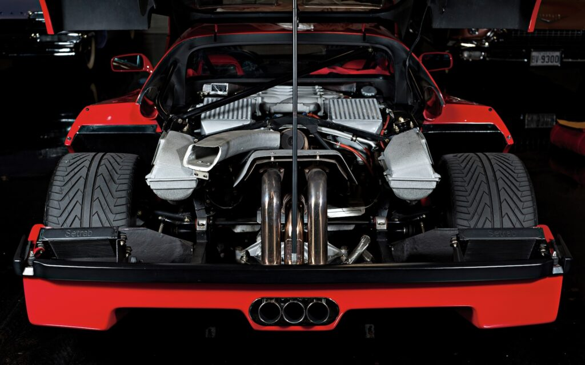

V12 TIPO 130 DELLA FERRARI 250 GTO

Il cuore pulsante della leggendaria Ferrari 250 GTO è il motore V12 Tipo 130, un capolavoro progettato da Gioachino Colombo. Si tratta di un 12 cilindri a V di 60°, con cilindrata di 2.953 cm³, dotato di sei carburatori Weber doppio corpo e distribuzione monoalbero per bancata. Questo propulsore è in grado di erogare circa 300 CV a 7.500 giri/min, permettendo alla GTO di raggiungere velocità superiori ai 280 km/h — numeri straordinari per l’epoca. La sua leggerezza, ottenuta grazie all’uso dell’alluminio per blocco e testate, insieme a una risposta immediata all’acceleratore, lo resero perfetto per la competizione e per la guida estrema su strada. Il Tipo 130 non è solo un motore, ma l’anima tecnica di una delle auto più iconiche mai costruite: un equilibrio perfetto tra innovazione meccanica, affidabilità e potenza che ha contribuito a scrivere alcune delle pagine più gloriose della storia Ferrari.
V8 BITURBO DELLA FERRARI F40
Il motore della Ferrari F40 è un V8 biturbo da 2.936 cm³ che ha ridefinito il concetto di prestazioni estreme negli anni ’80. Derivato direttamente dalla 288 GTO Evoluzione e sviluppato con l’esperienza maturata in Formula 1, questo V8 a 90° presenta due turbocompressori IHI, doppio intercooler, iniezione elettronica Weber-Marelli e testate con doppio albero a camme per bancata. Eroga una potenza impressionante di 478 CV a 7.000 giri/min, con una coppia brutale di 577 Nm, spingendo la F40 da 0 a 100 km/h in soli 3,8 secondi e oltre i 320 km/h di velocità massima. Il motore è montato in posizione posteriore centrale, abbinato a un cambio manuale a 5 marce e incastonato in un telaio tubolare con pannelli in kevlar e fibra di carbonio. Privo di controlli elettronici, il V8 della F40 rappresenta l’ultima espressione della meccanica pura: una bestia difficile da domare, ma capace di regalare un'esperienza di guida cruda, autentica e indimenticabile. È l’essenza Ferrari, scolpita nel metallo e nel fuoco.
V12 IBRIDO DELLA FERRARI LAFERRARI
Il motore della LaFerrari è una pietra miliare nella storia della Casa di Maranello: un V12 aspirato da 6.262 cm³ abbinato a un motore elettrico HY-KERS, per una potenza combinata di 963 CV. Il V12 a 65° sviluppa 800 CV a 9.000 giri/min, con una zona rossa che arriva a ben 9.250 giri/min, mentre il motore elettrico ne aggiunge altri 163 CV, recuperando energia in frenata e in rilascio per restituirla istantaneamente in accelerazione. La tecnologia HY-KERS, derivata direttamente dalla Formula 1, garantisce una spinta continua senza turbolag e contribuisce a prestazioni straordinarie: 0-100 km/h in meno di 3 secondi, 0-200 in 6,9 e una velocità massima superiore ai 350 km/h. Il sistema è integrato con un cambio F1 a 7 rapporti doppia frizione e controlli elettronici evoluti. Oltre alla brutalità meccanica, questo powertrain rappresenta l’ingresso di Ferrari nell’era dell’elettrificazione senza perdere la sua anima: il rombo del V12 si unisce al silenzio della spinta elettrica in una sinfonia che è pura innovazione al servizio della tradizione.